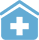
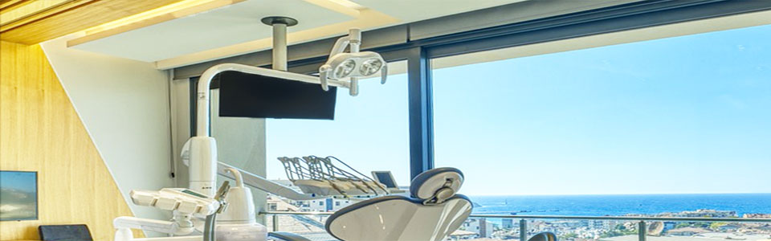
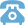
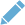
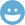

【架空案件】コーポレートサイトのトップページコーディング（写真変更含む）
・レスポンシブ非対応(1080px以上想定)。
・Udemy教材のカンプデザインデータを入手しました（?）。
・Photoshopでカラー変更、写真変更、他変更しました（?）。
・空と海が見渡せる施設と想定し、診療コンセプトや景色から、青色をブランドカラーに変更し、サイトカラーで利用。
・施設内の爽やかさを際立たせるため、写真中のモニター画面の映り込みをPhotoshopでオフし、海の青色と木材のベージュ、治療器具の白色を際立たせコントラストを強めました。
・フォントはグーグルフォントの使用を優先し、開発コストを削減しました。
・今回はカラー変更のみ承った想定だが、元デザインのレイアウトや余白については、より見やすいサイトのためにサイト構成についてカンプから手直しを入れたいところ。
・次回はレイアウト構成提案と同時に、レスポンシブ対応も同時に着手したいところ。

まごころと優しさを大切に
ネストクリニック
クリニックについて
スタッフ紹介
施設紹介
アクセス


お電話での予約はこちら
院長のブログ
お客様の声
TOP
?をベースにPhotoshopデータを制作?、からのコーディング構成予想図
Udemy教材デザインカンプ?